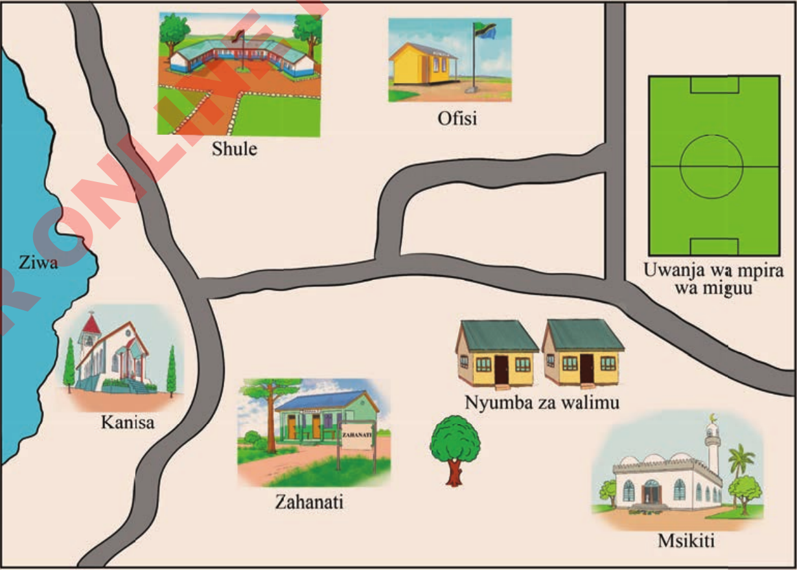

Maswali
- 1. Shule ipo upande gani ukitokea nyumbani kwa Juma?
- 2. Je, nyumba ya David iko uelekeo gani kutoka nyumbani kwa Mwajuma?
- 3. Dereva Masanja atafuata uelekeo gani anapoendesha kutoka Barabara ya Warioba kwenda mahakamani?
- 4. Utamuelekeza vipi rafiki yako kufika shule ya msingi Songambele akitokea bustani iliyoko Kaskazini mwa Barabara ya Warioba?
- 5. Nyumba ya David iko upande gani kutoka nyumbani kwa Katherin?
Tumia ramani kubaini umbali
Kazi ya kufanya namba 3
Chunguza Kielelezo namba 3, kisha jibu maswali yanayofuata:

Kielelezo namba 3: Mtaa wa Makuti